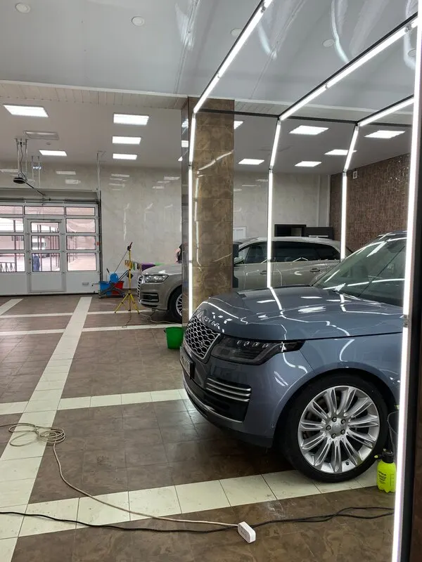
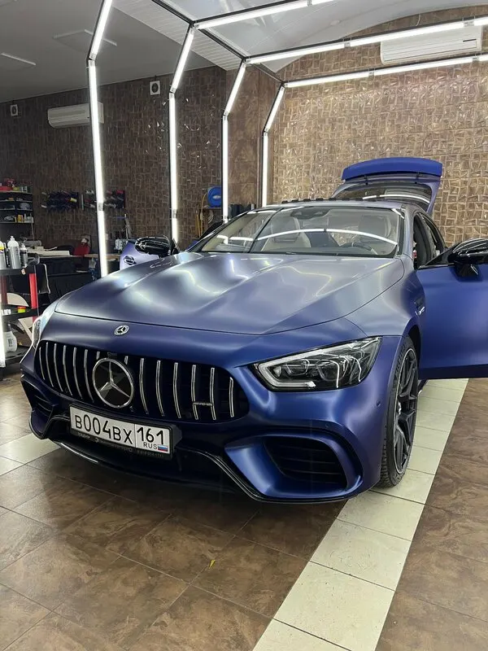
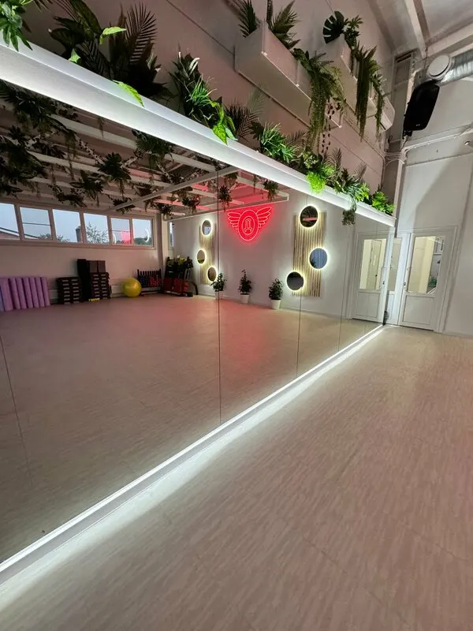
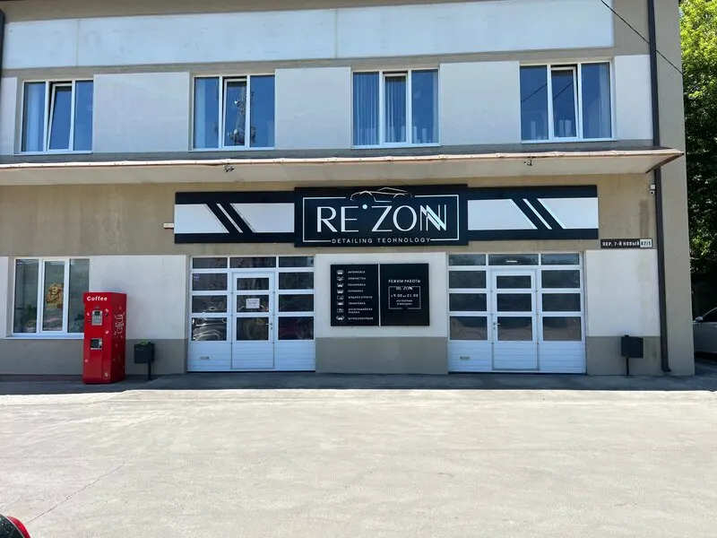

Детейлинг-студия · Таганрог
Детейлинг в Таганроге – до заводского состояния
Полировка фар с заменой линз, оклейка плёнкой, керамика, химчистка и детейлинг-мойка двигателя. Объясняем, как и почему лучше сделать, а пока работаем – вы отдыхаете в зоне ожидания.
- Рейтинг 5,0 – 133 оценки на Яндекс.Картах
- 7-й Новый пер., 87-1 – ежедневно 09:00–21:00
- Работают Владимир и Анна

Что вы получаете в Rezon
Входит
- Консультацию: показываем и объясняем, как будет смотреться работа
- Промывку узлов до заводского состояния
- Приятную зону ожидания, пока работаете с машиной
- Работу в срок – время называем при записи
Отдельно, если нужно
- Работу без согласования объёма
- Сюрпризы в цене после выдачи
- Спешку за счёт качества
Цены на типовые работы
Точную сумму называем после осмотра автомобиля – до начала работ.
Детейлинг
- Мойка кузовабесконтактная или ручная, химия под загрязнениеот 1 000 ₽
- Детейлинг-мойка кузовакомплексная, до двух фазот 1 600 ₽
- Детейлинг-мойка двигателяпромывка до заводского состояния и консервацияуточнить
- Полировка фар с заменой линзби-LED линзы, оклейка плёнкойуточнить
- Покрытие керамикойпосле подготовки кузовауточнить
Полировку, оклейку и керамику оцениваем по фото или при осмотре. Пишите в мессенджер – назовём цену до начала работ.
Как проходит работа с нами
- 01
Пишете и присылаете фото
Фары, кузов, салон – покажите, что беспокоит. Оценим объём и предложим решение.
- 02
Согласовываем цену и дату
Называем сумму до начала работ. Записываем удобное время – работаем ежедневно до 21:00.
- 03
Делаем детейлинг
Полировка, оклейка, керамика, химчистка – по регламенту. Ждёте в зоне отдыха.
- 04
Принимаете результат
Осматриваете машину при мастере. «Подкапотка как с завода» – под такой результат подписываемся.



Чего у нас не бывает
Не начинаем без согласования
Объём и цену утверждаете до старта. Дополнительное – только после вашего «да».
Не прячем процесс
Объясняем, как и почему лучше сделать – как пишут в отзывах: «сразу смотрят и объясняют».
Не гоним машину из бокса мокрой
Выдаём доведённым до конца результатом – проверяете при мастере.
Не заставляем ждать в коридоре
Пока работаете с машиной – отдыхаете в зоне ожидания студии.
Отзывы с Яндекс.Карт
«Не давно, довелось побывать в лучшей детейлинг студии в Таганроге, приехал сделать замену авточехлов, сотрудник сразу смотрит и объясняет как и почему лучше сделать, работа была сделана быстро и очень качественно… пока вы ждете как преображается ваш автомобиль, вы можете провести время в приятной зоне отдыха.»
Гость Яндекс.Карт · 2026
«Производили полировку фар и оклейку плёнкой, заменили штатные линзы на би Лед линзы, все сделали максимально качественно, фары как будто новые, светить стали просто превосходно, при включении дальнего света наступает день. Быстро и качественно, рекомендую.»
Гость Яндекс.Карт · 2026
«Заезжал на детейлинг уборку в салоне и на двухфазную мойку с детейлингом подкапотного пространства, результатом доволен! Уникальный подход к автомобилю… промыли все до заводского состояния, подкапотка просто как с завода!»
Гость Яндекс.Карт · 2026
Отзывы с карточки на Яндекс.Картах, без правок.
Частые вопросы
Как записаться?
Напишите в WhatsApp или Telegram – пришлите фото задачи, согласуем цену и время.
Заменяете линзы в фарах?
Да: ставим би-LED линзы, фары после этого «как новые» и светят «как день» – так описывают результат клиенты.
Моете двигатель?
Да, детейлинг-мойка моторного отсека – по отзывам, промываем «до заводского состояния».
Можно ли приехать из другого города?
Да, в отзывах есть клиенты из других городов – пишите заранее, подготовимся и встретим к назначенному времени.
Запишитесь на детейлинг в Rezon
- Адрес
- Таганрог, 7-й Новый пер., 87-1, Таганрог
- Часы
- ежедневно 09:00–21:00
- Телефон
- +7 (905) 455-65-23